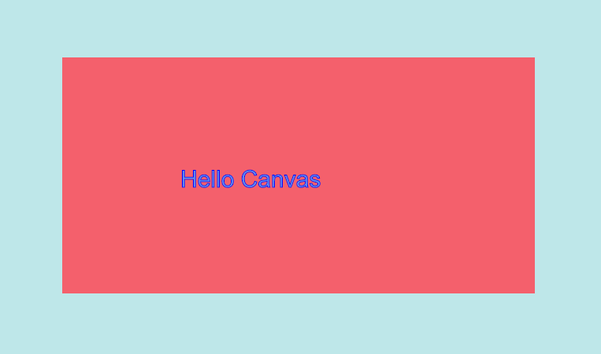
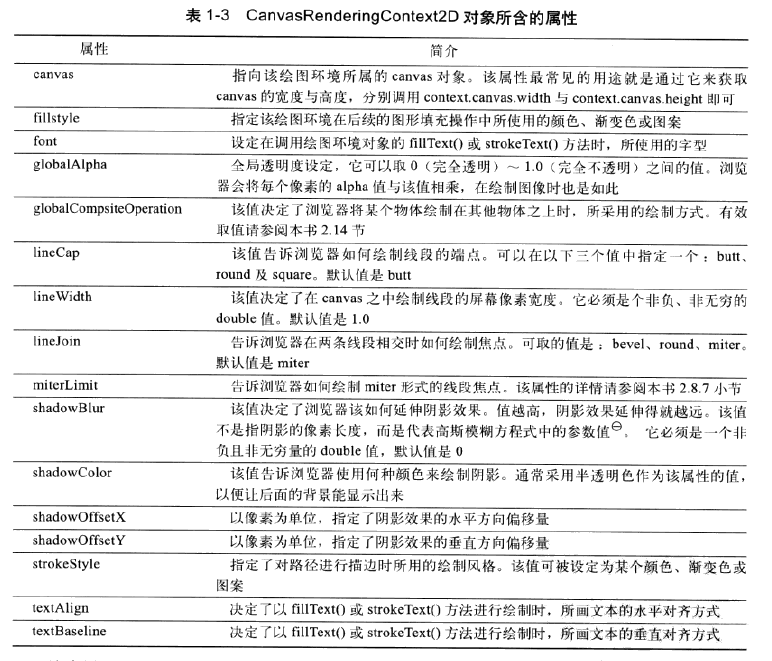
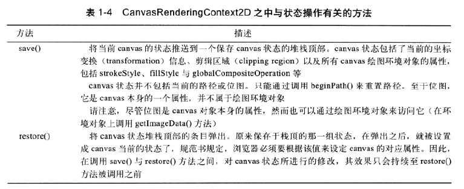

基础知识
Canvas元素基本创建
Canvas元素可谓是HTML5中最为强大的元素，而它真正的能力是由Canvas的context对象表现出来的，该环境变量可从canvas元素身上获取
|
|
|
|
效果如下:

注意:
1.上述的html代码中<canvas></canvas>内部有一段文本，称为“后备内容(fallback content)”，只有在浏览器不支持canvas的时候才会显示
2.根据规范，在canvas元素添加行内样式width和height时，不要加单位
3.默认情况下canvas元素大小为300 X 150 个屏幕像素
4.为何要在行内样式中指定宽高，在CSS中指定可以吗？
这两种方式是有差别的。canvas元素实际上有两套尺寸：一是元素本身大小，二是元素绘图表面(drawing surface)大小。在设置行内样式的时候同时改变了这两套尺寸；而若通过CSS修改样式，则只会改变元素本身的大小，而不会影响到绘图表面，在这种情况下，即canvas元素大小不符合其绘图表面大小时，浏览器会对绘图表面进行缩放，使其符合元素大小
Canvas API
width
绘图表面宽度，行间样式设置时，浏览器会将canvas元素大小设定成与绘图表面大小一致；但若在CSS中覆写了元素大小，那么浏览器会将绘图表面进行缩放，使之符合元素尺寸
默认值:300height
绘图表面高度，其余参上getContext()
返回与该canvas元素相关的绘图环境对象，每个canvas元素都和这样的环境对象一一对应。toDataURL(type,quality)
返回一个数据地址(data URL)，可以将它设定为img元素的src值。第一个参数指定了图像的类型,如image/jpeg，不指定则默认为image/png。第二个参数必须是0-1.0之间的double值，表示图像的显示质量。toBlob(callback,type,args..)
创建一个用于表现此canvas元素图像文件的Blob。第一个参数是一个回调函数，浏览器会以一个指向Blob的引用作为参数，去调用该回调函数，第二个参数，第三个参数同上。将来还有可能加入更多参数
Canvas绘图环境
2d

可以通过JS加入新的方法或者在已有方法上进行扩展
3d
与2d对应的3d绘图环境，叫做WebGL,它完全符合OpenGL ES2.0的API
Canvas状态的保存与恢复
Canvas绘图环境中有两个方法save()和restore()，用来保存恢复绘图环境的所有属性。
绘图环境的save()会将当前绘图环境压入堆栈顶部，对应的restore()则会从堆栈顶部弹出一组状态信息，并据此恢复当前绘图环境的状态。
所以，可以嵌套使用save()和restore()
兼容性
理论上Canvas是不支持IE8及以下浏览器的,若是必须要支持IE6,7,8的话，可以使用ExploreCanvas和Google Chrome Frame后者可以将IE引擎替换为Chrome引擎后者项目已经废弃
基本事件
mousedown/mousemup,mousemove/mouseout监测鼠标事件
DOM3级事件中定义了9个鼠标事件。
mousedown:鼠标按钮被按下（左键或者右键）时触发。不能通过键盘触发。mouseup:鼠标按钮被释放弹起时触发。不能通过键盘触发。click:单击鼠标左键或者按下回车键时触发。这点对确保易访问性很重要，意味着onclick事件处理程序既可以通过键盘也可以通过鼠标执行。dblclick:双击鼠标左键时触发。mouseover:鼠标移入目标元素上方。鼠标移到其后代元素上时会触发。mouseout:鼠标移出目标元素上方。mouseenter:鼠标移入元素范围内触发，该事件不冒泡，即鼠标移到其后代元素上时不会触发。mouseleave:鼠标移出元素范围时触发，该事件不冒泡，即鼠标移到其后代元素时不会触发。mousemove:鼠标在元素内部移动时不断触发。不能通过键盘触发。
在JQ中，hoverAPI是将mouseenter和mouseleave结合在一起使用的
如何将鼠标坐标转换为Canvas内部坐标？
keydown/keyup,keypress键盘事件
当在浏览器窗口中按下某个键时，浏览器将会生成键盘事件。这些事件发生在当前拥有焦点的HTML元素身上；若元素没有焦点，那么事件的发生地会上移至window与document对象canvas是一个不可获取焦点的对象，所以要监听键盘事件，应该在document或window对象上绑定
触摸事件
待补充
关于底层实现
Canvas 是一种立即模式的绘图 API,这意味着绘制时不保留所绘制对象的信息。与其相反的是保留模式(如SVG),这是一种声明性的 API,维护所绘制对象的层次结构。
保留模式 API 的优点是，对于你的应用程序，他们通常更容易构建复杂的场景，例如 DOM。通常这都会带来性能成本,需要额外的内存来保存场景和更新场景，这可能会很慢。
Canvas 受益于立即模式,允许直接发送绘图命令到 GPU。但若用它来构建用户界面，需要进行一个更高层次的抽象。例如一些简单的处理,比如当绘制一个异步加载的资源到一个元素上时会出现问题,如在图片上绘制文本。在HTML中，由于元素存在顺序，以及 CSS 中存在 z-index，因此是很容易实现的。
绘制
坐标系统
默认情况下，Canvas坐标系统